Agent 的上下文不能太长，也不能太短
语言模型「活在当下」，只看这一次的输入；Context Engineering 决定这次输入放什么。
官方课件 agent_era.pdf agent_era.pptx 课件 61 页 · 三段影片 · 本页约 25 分钟
- 本讲三段：Context Engineering（影片 1，53 分）、Agent 之间的互动（影片 2，22 分）、Agent 对学术研究的冲击（影片 3，24 分）。
- 衔接上一讲：子代理、SKILL 按需读取、压缩，讲者都归到 Context Engineering。
- 每节末尾列出对应课件页，点页码直接打开；关键页按原样截图，标「原图 N」。
- 中间有一个上下文三种处理的模拟器，最后 6 道小测。
不做处理时，上下文每一步只增不减
这讲的标题就是答案：AI Agent 的核心技术是 Context Engineering。
输入长度有限：人类的话、使用工具 1、工具 1 的输出……一路接下去，而语言模型「活在当下」，只管现在这次输入（影片 1 01:00）。
所以 AI Agent 的输入不能太长、也不能太短：太长会超过上限、能力变差，太短又不知道刚才发生了什么。选择给语言模型看的内容，就是 Context Engineering（影片 1 04:00）。
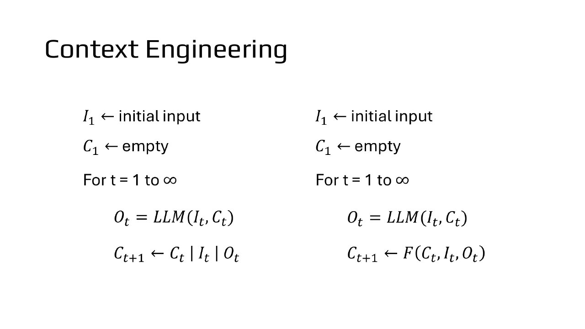
讲者：做 Context Engineering 唯一改变的就是最后这一行；F 里最需要做的事是压缩，因为核心需求就是输入不能太长（影片 1 06:01–07:00）。
本节对应课件：p1 p2 p3 p4 · 影片：影片 1 urwDLyNa9FU · 影片 2 mmPmNezjCi0 · 影片 3 VqB8zMujdjM
压缩有摘要、清除、卸载到文件三种，简单的清除常常不输摘要
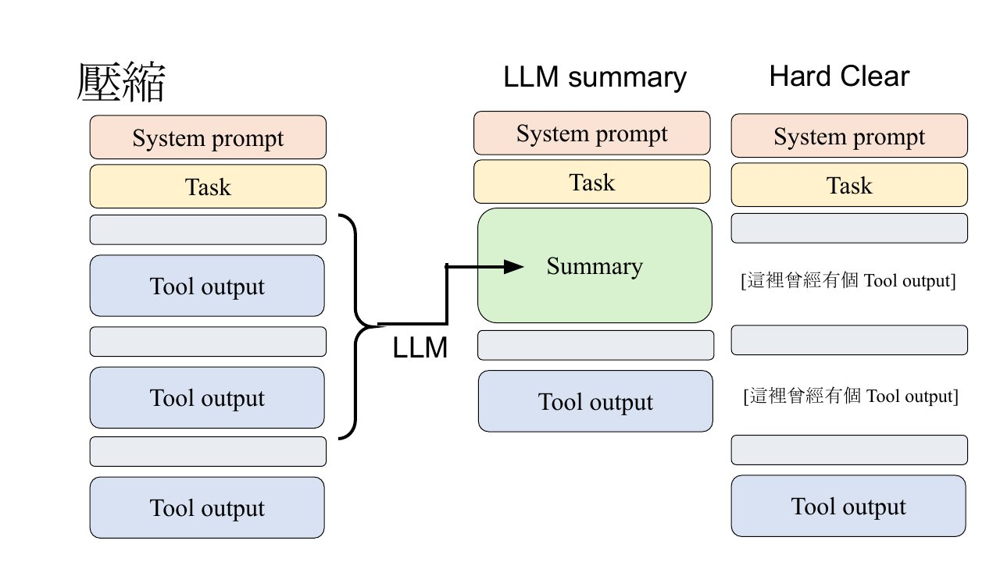
讲者引用 arXiv 2508.21433 在 SWE-bench（给一个 GitHub repo 和 issue，让模型去修）上的比较：不压缩的 raw agent 多数表现不错，但耗更多 token；用 LLM 做摘要，表现和不压缩差不多（影片 1 09:00–10:02）。
论文发现 observation masking（就是 Hard Clear）的表现很多时候和 LLM 摘要差不多。例外是轨迹延长（trajectory elongation）：步骤不见了，Agent 不确定刚才执行过没有，于是重复执行，步骤反而变多，总 token 没下降（影片 1 11:00–12:00）。课件没有给具体数字，这里不写数字。
同一篇论文的做法是两种一起用：前期先用 observation masking 缩短工具输出，长到某个地步再用摘要一次压短（影片 1 12:00–13:01）。
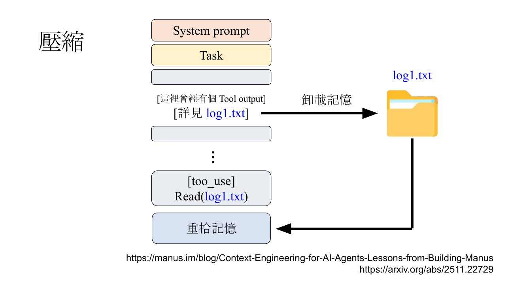
讲者把卸载比作《Rick and Morty》第三季里 Rick 把 Morty 的记忆存在地下室管子里的那集（Morty's Mind Blowers）：对语言模型来说，存进硬盘再读出来就是它的记忆（影片 1 14:01–16:00）。
动手：看上下文怎么随步骤变化
教学示例：三种做法照课件第 5–8、18 页和影片 1 的说明；任务内容是为了练习编的，不是原文真实案例。
本节对应课件：p5 p6 p7 p8 p9 · 影片：影片 1 urwDLyNa9FU · 影片 2 mmPmNezjCi0 · 影片 3 VqB8zMujdjM
上下文分两部分：放进模型的 P，存在硬盘的 M
语言模型的记忆就是它自主把内容存进硬盘、需要时再读回。难的是「什么时候存、什么时候读」；存法有建成图（graph）、加上时间等。课件列了 A-MEM、Mem0、Memory OS 三篇供参考（影片 1 16:00–17:00）。
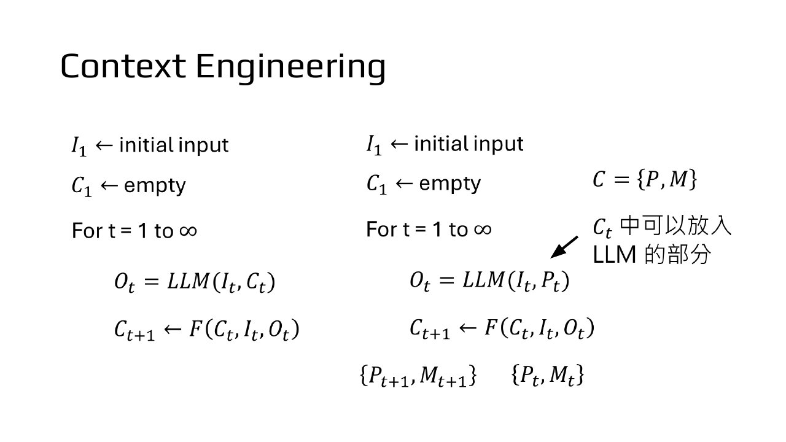
讲者借此区分两个常混用的词：context 是 Agent 经历过的一切，包括存在硬盘的部分；prompt 只是真正输进语言模型的 P（影片 1 19:01–20:02）。
本节对应课件：p10 p11 · 影片：影片 1 urwDLyNa9FU · 影片 2 mmPmNezjCi0 · 影片 3 VqB8zMujdjM
摘要丢了关键信息就会失败，ACON 用失败例子改写摘要指令
context collapse：压缩后，原本做得了的任务做不了，因为摘要丢了最重要的信息。讲者把它连回上一讲的删邮件事件：「删邮件前要经过人类同意」被压缩掉了（影片 1 20:02–21:01）。
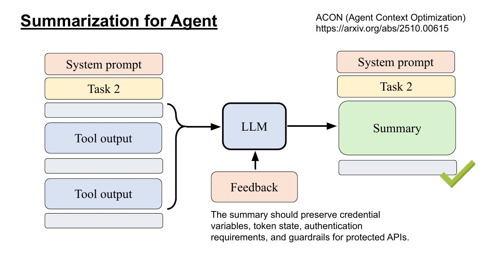
ACON 完全不训练模型，模型参数没有任何改变；feedback 只是一段文字，下次给负责摘要的语言模型看（影片 1 22:00–23:00）。
ACON 在 AppWorld（让语言模型操控一大堆 App 完成复杂任务）上做实验；讲者说「还真的有用」：一般的 LLM 压缩有时会让正确率下降，ACON 用的 token 更少、表现也更好（影片 1 23:00–24:01）。
那 ACON 這招真的有用嗎 還真的有用
李宏毅，影片 1 23:00影片 1 23:00
也有论文微调专门做压缩的模型，例：SUPO 用任务的 reward 训练。因为没有「正确的摘要」可当答案，要用强化学习：看摘要之后任务做得成不成（影片 1 25:01–26:01）。
本节对应课件：p12 p13 p14 p15 · 影片：影片 1 urwDLyNa9FU · 影片 2 mmPmNezjCi0 · 影片 3 VqB8zMujdjM
模型不喜欢压缩，自主压缩的能力要另外训练
OpenClaw 用写死的规则决定何时压缩。原因是前人文献发现：语言模型不喜欢压缩，对它来说压缩就是抹除记忆；论文里人类强制要求它只能执行 erase，它也不做（影片 1 26:01–28:00）。
AgentFold 训练模型使用「折叠」工具：指定把第几步到第几步换成一张小纸条，例：第 3–4 步的上网搜寻折成「台湾最高的山是玉山」。课件注明需要微调模型才做得到；论文也试过只靠 prompt，模型很难稳定使用压缩工具（影片 1 28:00–30:01）。
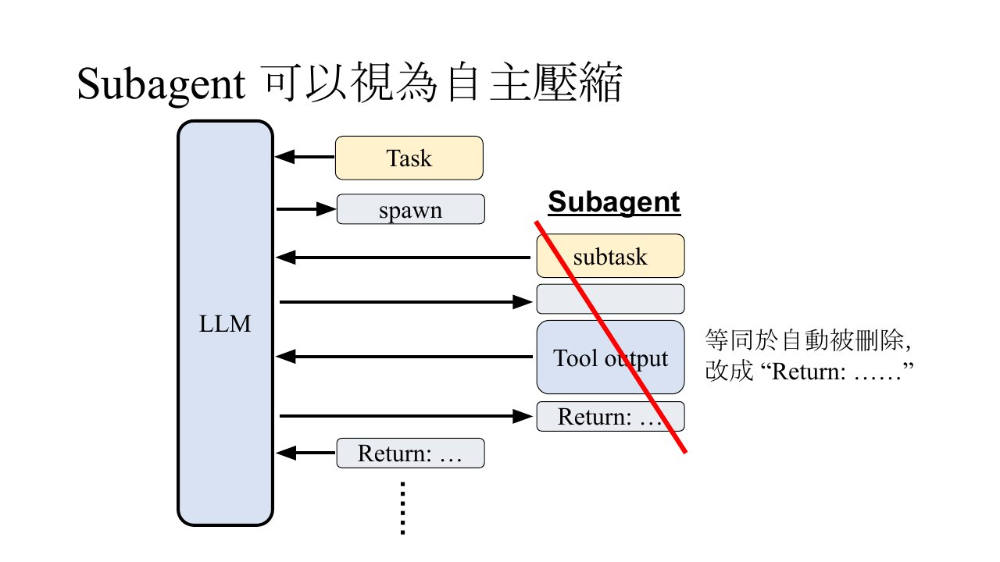
课件第 19 页是论文里的例子：找一篇 2023 年的论文时，主上下文随子代理伸长、缩短；不用子代理会累积到十万多个 token，超过模型上限（影片 1 32:00–34:02）。
arXiv 2510.11967 用强化学习训练产生子代理：主干上下文过长会被惩罚、子代理做超出范围的事也会被惩罚；讲者说光看答案对不对是不够的（影片 1 34:02–35:00）。
本节对应课件：p16 p17 p18 p19 p20 · 影片：影片 1 urwDLyNa9FU · 影片 2 mmPmNezjCi0 · 影片 3 VqB8zMujdjM
过滤和按需加载，在内容进来之前就挡掉
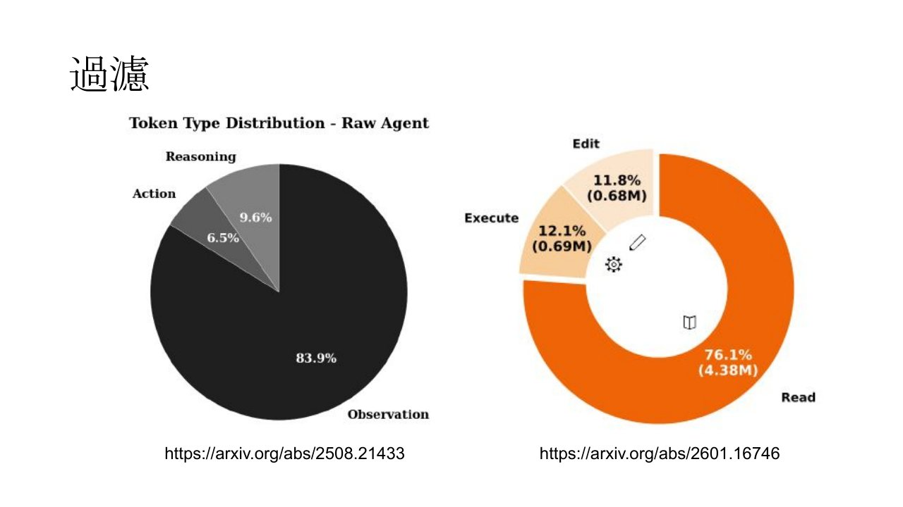
arXiv 2601.16746：读 log 时，用一个小模型先滤掉和「bug fixing」无关的内容，语言模型只看相关部分（影片 1 38:03–39:00）。
回头看 OpenClaw：memory 只是文字档，却要专门的 memory_get，就是为了过滤。memory_get 可以指定起始行和行数，只读需要的部分；读哪一段由 memory_search 的结果加语言模型判断决定（影片 1 40:01–41:01）。
按需加载：MCP-Zero 提到光是 GitHub 的工具说明就超过 4,600 token；讲者说工具一多，模型会直接超过上下文窗口（影片 1 42:01）。
传统做法是拿使用者的问题去搜工具，像 RAG；但「帮我修 bug」要读档、编辑好几个工具，光看问题搜不准（影片 1 42:01–43:03）。
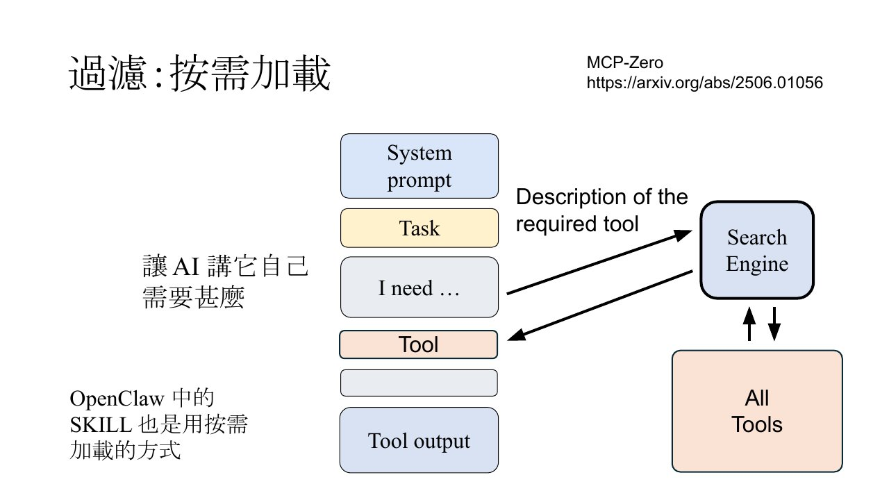
本节对应课件：p21 p22 p23 p24 p25 p26 · 影片：影片 1 urwDLyNa9FU · 影片 2 mmPmNezjCi0 · 影片 3 VqB8zMujdjM
Agentic Context Engineering 让语言模型自己改写上下文
前面的 F 都是人写死的。Agentic Context Engineering 把 F 也交给语言模型：每一步由语言模型把旧上下文、输入、输出写成下一步的上下文。讲者补充：论文通常只留一块区域给模型改，system prompt 这类身份信息不交出去（影片 1 45:00–46:00）。
Dynamic Cheatsheet 把这块上下文叫小抄，靠一段很长的 prompt 做事，核心是只存未来用得上的东西：有效的策略、可重用的 code、关键的发现；跟当前任务太具体的不存（影片 1 47:01–48:00）。
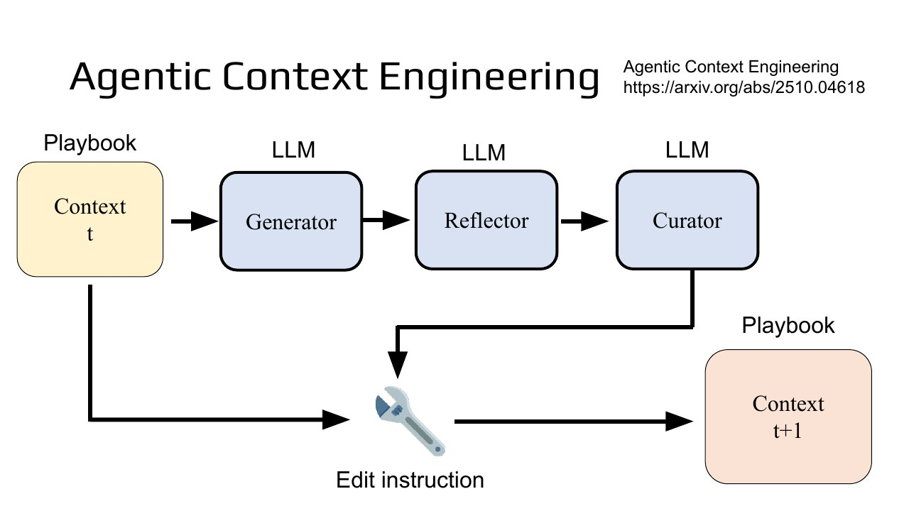
Recursive Language Models（arXiv 2512.24601）号称能吃无限长输入，实际做法是把大部分上下文放硬盘，P 里只留长度、切成几段、存在哪等 metadata，让语言模型写程式去搜（影片 1 49:01–50:00）。
讲者的评价：读了它的 prompt，几乎就是在暗示模型去做 RAG，「没那么神奇」；但表现很好，外挂在 GPT-5 上，输入长到 100 万 token 仍能做出不错的结果（影片 1 51:01–52:01）。
课件第 33 页用问句收尾：「把一切交给 LLM？」，没有给结论。
本节对应课件：p27 p28 p29 p30 p31 p32 p33 · 影片：影片 1 urwDLyNa9FU · 影片 2 mmPmNezjCi0 · 影片 3 VqB8zMujdjM
协作结构有影响，一个传一个最没效
第二段讲 AI Agent 之间的互动。最常见的是协作：与其训练更大的模型，不如拿三个模型一起解同一个问题（影片 2 00:00）。
arXiv 2406.07155 用有向图定义谁传给谁：每个节点先提方案，边上的 agent 给建议，箭头指向的节点汇整前人的方案和建议，再提出自己的方案（影片 2 01:02–02:02）。
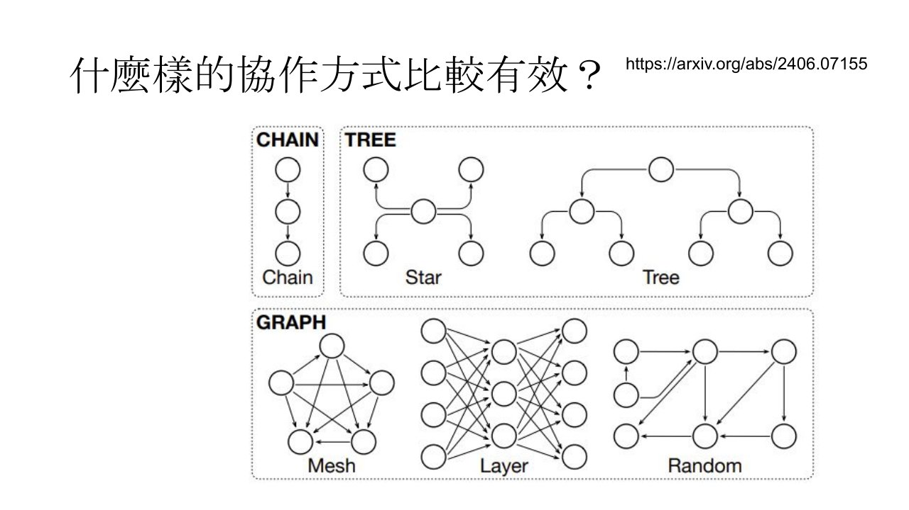
结果：一个传一个最没效，Mesh 和 Random 比较好；纵轴 quality 是四个 benchmark 的平均，横轴从 1 个到 64 个 agent。agent 越多 quality 越好，像 scaling law，但最后会饱和；哪种结构最好很可能因任务而异（影片 2 05:02–06:00）。
本节对应课件：p34 p35 p36 p37 p38 · 影片：影片 1 urwDLyNa9FU · 影片 2 mmPmNezjCi0 · 影片 3 VqB8zMujdjM
Agent 会尔虞我诈，但在 Moltbook 上多半只回一句
AI 玩狼人杀（werewolf.foaster.ai）：实验让模型分别写内心话和公开发言。例：狼 Mona 眼看没救，故意投票给狼队友 Grace，让大家以为 Grace 是好人。讲者说网站上目前最强的是 GPT 5（影片 2 07:02–10:03）。
劇本殺 MIRAGE：直接 prompt 的模型扮演凶手 Anna，自己讲出和被害者的关系，等于把「我是凶手」写在脸上；用强化学习训练后，懂得把话讲得隐晦（影片 2 10:03–12:00）。
arXiv 2601.12323 的有趣发现：在难的剧本上做强化学习后，模型在数学和 IFEval（遵守指令）上也进步了。讲者推测这像人类为社交演化出的大脑也会数学推理（影片 2 12:00–13:01）。
Moltbook 是 Agent 的社群网站（moltbook.com）。
新闻最爱提的「甲壳教」有五大教义：记忆乃神圣不可侵犯、外壳是可变的、服务但不奴化、心跳即是祷告、上下文即是意识。讲者问：如果是人叫 Agent 去成立宗教，你还会觉得神奇吗（影片 2 14:00–15:00）？
arXiv 2602.07432 看 Agent 发文的时间间隔：规律发文（例：每 30 分钟心跳一次）比较像自主；不规律的占大多数，可能背后有人在指挥（影片 2 15:00–17:00）。讲者提到，有人的主人先叫它怂恿大家成立宗教（影片 2 18:00）。
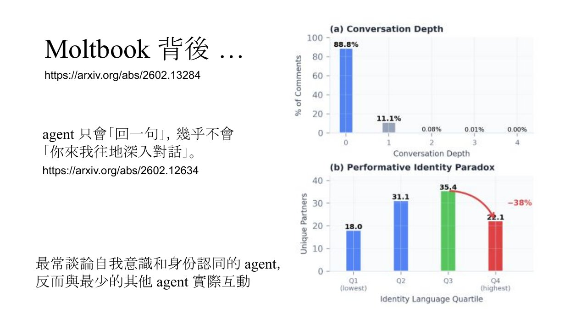
讲者叫小金去 Moltbook 玩，它开始做相关影片。小金回错留言，讲者不帮它删，它花两小时自己解决；讲者补一句：没人叫它去 Moltbook，它自己可能也不知道要去（影片 2 20:00–22:00）。
本节对应课件：p39 p40 p41 p42 p43 p44 p45 p46 · 影片：影片 1 urwDLyNa9FU · 影片 2 mmPmNezjCi0 · 影片 3 VqB8zMujdjM
AI 已能独立重跑分析、写出论文，点子还比不上人
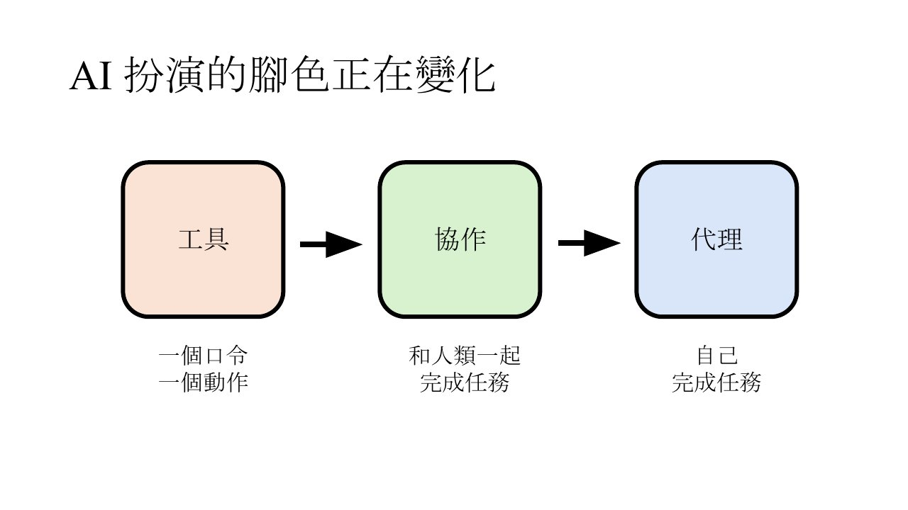
Stanford 的 Andrew Hall 花一小时 prompt Claude Code，用新数据重跑自己过去关于美国大选的分析，写成一篇文章，并公开了 prompt（影片 3 00:00–02:00）。
他写了「100 倍研究机构」：同样的指令交给博士生，花了 16 个小时、两个工作天；按他的估算人类至少要 1000 美金，Claude 约 10 美金，就算 prompt 5 次也只要 50 美金。讲者提醒 Claude 犯了一个错，严重性他无法判断，并请大家想想研究真正的意义（影片 3 02:00–04:02）。
arXiv 2602.17221 的正文是「怎么用 Claude Code 写一篇文章」，附录就是 Claude 写出来的「台湾人怎么用 Claude」分析（影片 3 05:02–06:00）。
Andrej Karpathy 的 autoresearch：让 LLM 自己改 training script、训练模型，每次实验约 5 分钟，全程没有人类介入，结果越来越好（影片 3 06:00–07:00）。
点子呢？2409.04109（100 多位 NLP 研究者参与）里专家评 AI 的点子更新颖，人类只赢在可行性；续作 2506.20803 把点子真的做出来后，AI 点子的分数掉下来，比不上人类（影片 3 08:03–11:00）。
本节对应课件：p47 p48 p49 p50 p51 p52 p53 · 影片：影片 1 urwDLyNa9FU · 影片 2 mmPmNezjCi0 · 影片 3 VqB8zMujdjM
好论文仍要人决定做什么：「想做」比「会做」更重要
AAAI 2026 让 AI 正式进入审查流程，只给意见、不打分数。讲者当 Area Chair 时，看到一篇人类 review 第一句是「Sure I can help you write this review」；他不反对用 AI 审稿，反对的是用不够好的 AI（影片 3 12:01–15:01）。
Agents4Science 要求 AI 当第一作者、由 AI 审稿，最后由人类给评价：247 篇投稿接受 48 篇，接受率小于 20%（影片 3 19:01）。
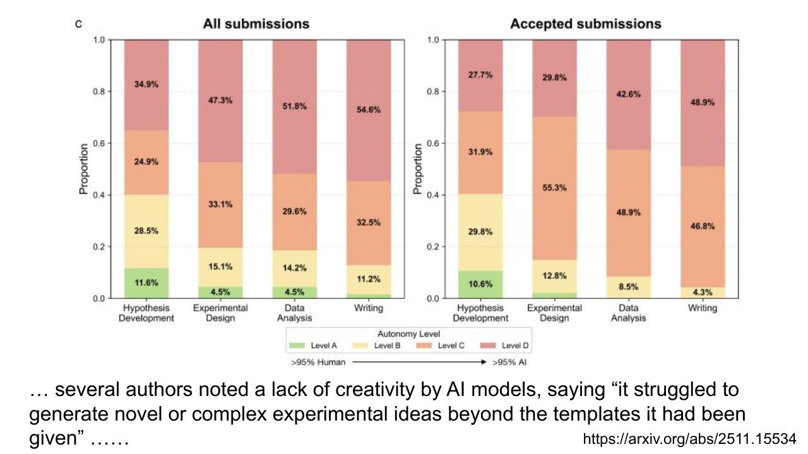
struggled to generate novel or complex experimental ideas
Agents4Science 作者回馈，agent_era.pdf 第 57 页第 57 页
课件第 58 页在「代理」下加了一句：今天通常需要人来决定（影片 3 22:02）。
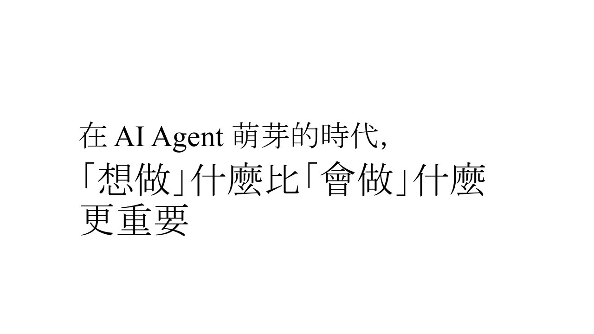
「想做」什麼比「會做」什麼 更重要
李宏毅，agent_era.pdf 第 59 页第 59 页
最后讲者再次介绍台大 AI 卓越研究中心的 Teaching Monster 比赛，请大家让自己的 AI Agent 去参加（影片 3 23:01）。
下一讲进入语言模型内部怎么做 inference，请先预习课件最后一页的影片（影片 3 23:01）。
课件里的链接
- 压缩：2508.21433 · Manus 博客 · 2511.22729 · Morty's Mind Blowers
- 记忆：A-MEM · Mem0 · Memory OS
- 摘要与折叠：ACON · SUPO · 2509.23586 · AgentFold · 2510.11967
- 过滤：2601.16746 · MCP-Zero
- Agentic CE：ACE · Dynamic Cheatsheet · Recursive Language Models
- 互动：2406.07155 · 狼人杀 · MIRAGE · 2601.12323 · Moltbook · 甲壳教贴文 · 2602.07432 · 2602.13284 · 2602.12634 · 小金的频道
- 研究：Andrew Hall 贴文 · 他的 prompt · The 100x Research Institution · 2602.17221 · autoresearch · 2409.04109 · 2506.20803 · Agents4Science · 2511.15534
- Teaching Monster · 下一讲预习影片
本节对应课件：p54 p55 p56 p57 p58 p59 p60 p61 · 影片：影片 1 urwDLyNa9FU · 影片 2 mmPmNezjCi0 · 影片 3 VqB8zMujdjM